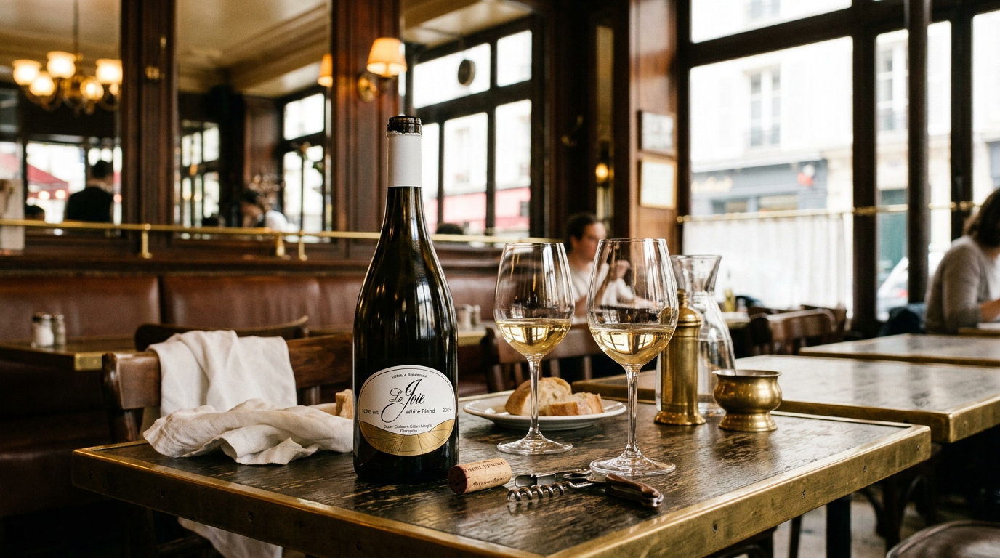
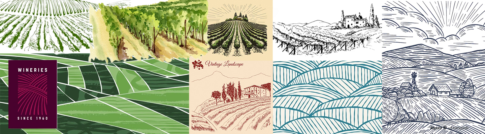
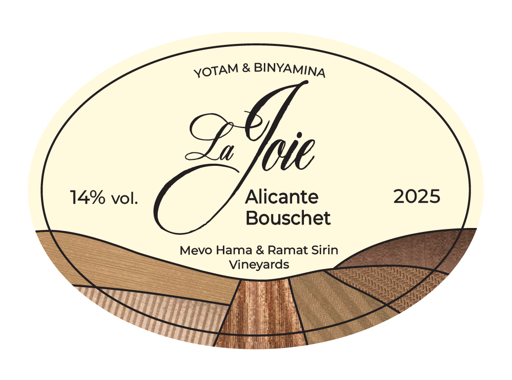
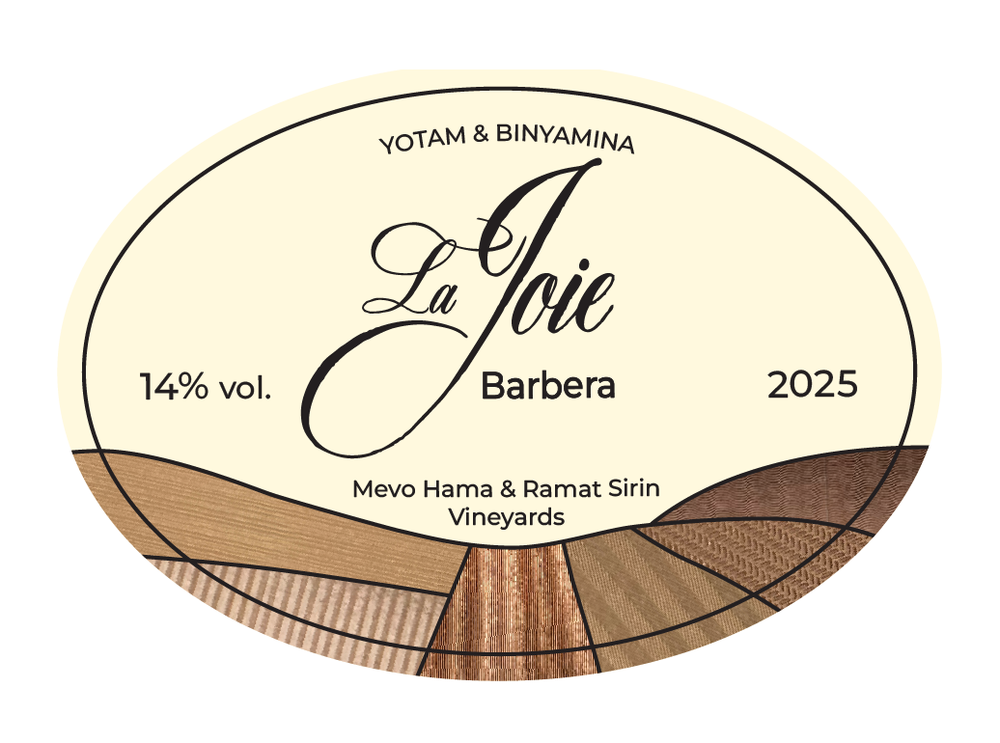
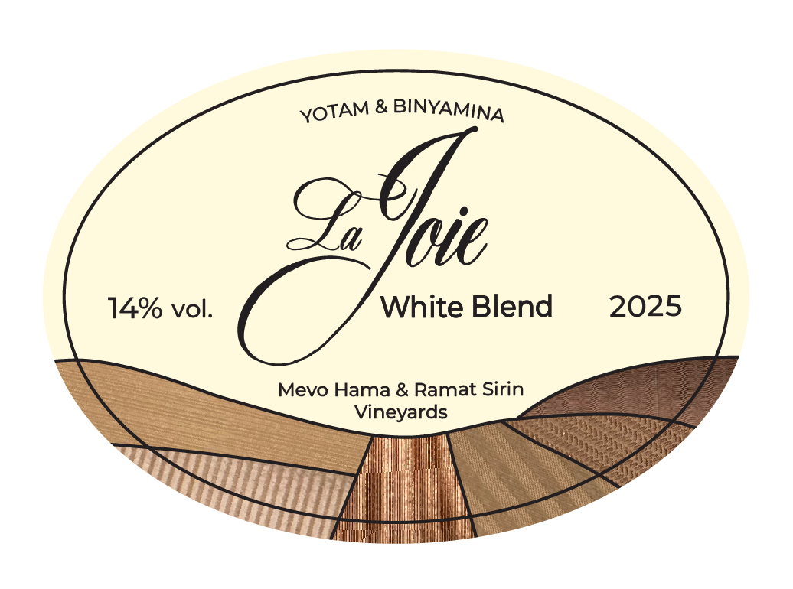
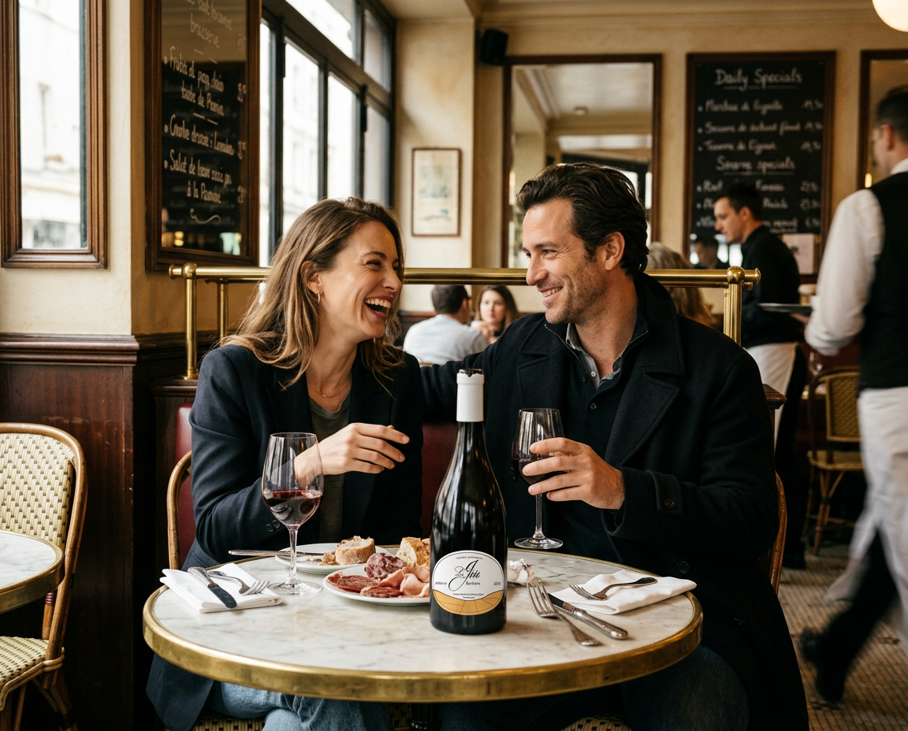
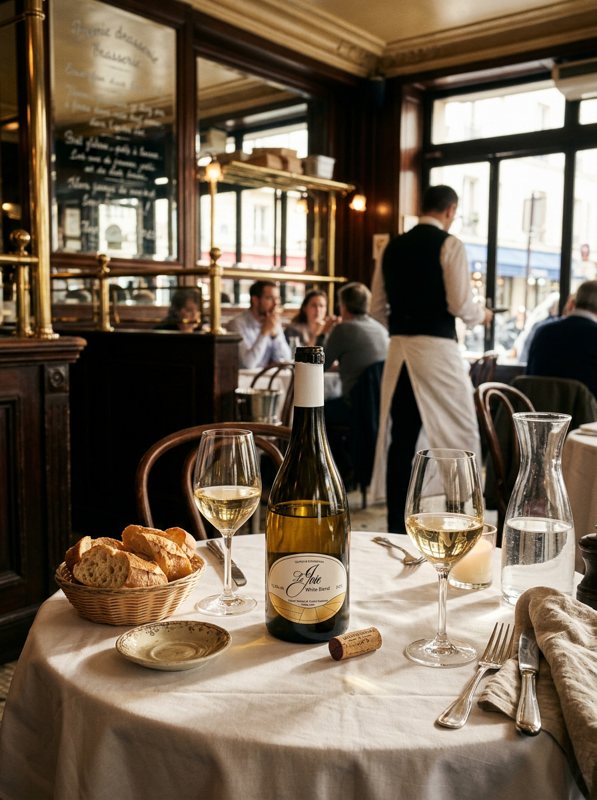
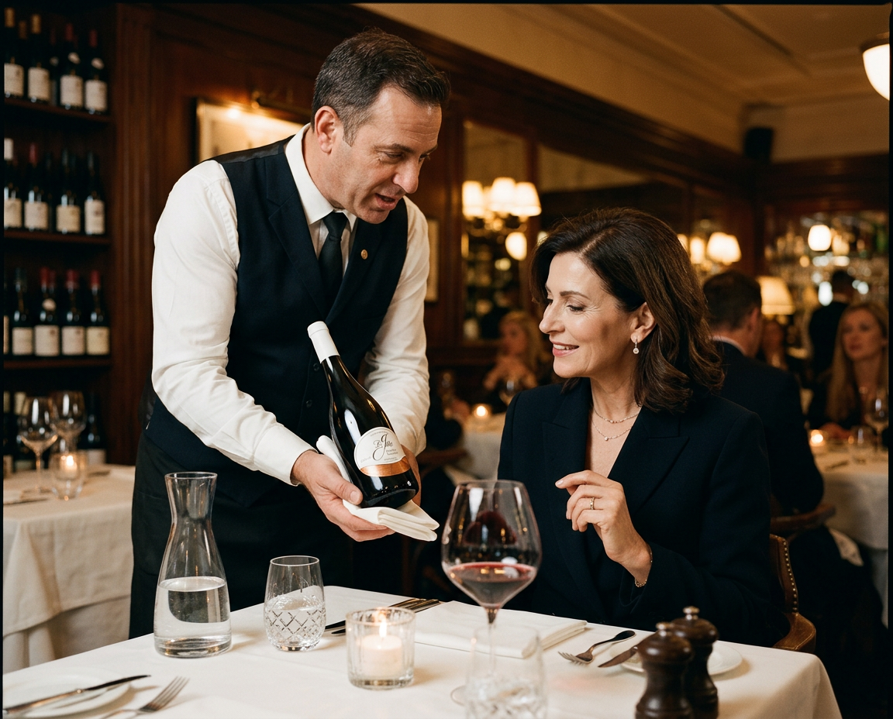

branding//print
Binyamina Winery is one of Israel’s oldest and most established wineries, blending decades of winemaking tradition with a contemporary approach to production. Located in the historic settlement of Binyamina, the winery draws inspiration from its rich heritage and its vineyards, which are spread across Israel.
Recently, the winery launched a premium wine series under the direction of Head Winemaker Yotam Sharon.
The wines are crafted from high-quality grapes sourced from select vineyards in Israel.

The wine labels are designed in the style of vintage French labels, drawing inspiration from the aesthetic of a classic French brasserie. Inspired by vector illustrations of vineyards, the design combines organic forms with a refined, timeless aesthetic. The labels evoke a sense of quality and luxury while simultaneously conveying joy and a playful spirit.



La Joie French for "joy" is a wine meant for special occasions rather than everyday consumption.
The design is clean and light, natural and organic, featuring various textured embossings on gold-toned paper stock, reflecting the diverse blend of vineyards from which the wine is crafted.


